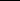
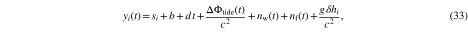
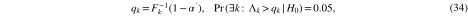
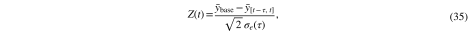

Simulation Atomic Clock Based on Gravitational Sensing for Subsurface Mass
Department of Electronics and Communication Engineering
KLEF (Koneru Lakshmaiah Education Foundation)
Vaddeswaram, Andhra Pradesh, India
Abstract—In general relativity the rate of a clock depends on the gravity potential at its location. A buried body of anomalous density changes that potential, so a precise atomic clock can in principle sense it. This paper simulates such a survey. The model combines the weak-field gravitational redshift, a spherical subsurface mass, three assumed optical-clock classes, station height error, a matched-filter detector and a nonlinear least-squares inversion, with a gravimeter model for comparison. For the baseline target (radius 1.5 km, centre depth 2 km, density contrast 500 kg/m3) the peak fractional frequency shift is 2.62 × 10−18. With 49 stations and 10 h per station, detection probability at a 5% false-alarm rate is 6.6%, 26.3% and 99.7% for the field, advanced and future classes. For the future class, clock-only inversion has a median depth error of 907 m and mass error of 40%, against 3.4 m and 0.18% for the gravimeter. A real-time, time-domain simulation of the campaign adds tides, link outages and drift: the future class detects the target after a median of 11 days, but an unmodelled drift of 10−19 per day gives false detections in 99.7% of noise-only campaigns unless a trend is fitted. Clocks suit only large masses, as a long-wavelength complement to gravimetry. All results are from synthetic data; no clock hardware or field measurement is claimed.
Index Terms—Atomic clock, gravitational redshift, chronometric geodesy, subsurface mass detection, gravity potential, Allan deviation, matched filter, inversion, simulation.
Knowledge of what lies below the ground matters in resource exploration, groundwater studies, volcano monitoring, tunnelling and geodesy. A body that is denser or lighter than the surrounding rock, such as an ore deposit, a salt structure, an intrusion or a fluid reservoir, perturbs the gravity field above it. Gravimeters have used this fact for many decades by measuring the acceleration of free fall or its changes [18,20].
An atomic clock offers a different observable. According to general relativity, a clock deeper in a gravitational potential ticks more slowly than one higher in the potential. Comparing two clocks therefore measures a potential difference, not an acceleration. This approach is known as chronometric levelling or relativistic geodesy [1–3]. Optical clocks have improved to the point where laboratory systems report fractional systematic uncertainties below 10−18 [11], and transportable systems have been taken into the field [6,8,15].
The central question of this work is: for what size and depth of buried mass, and with what clock performance and survey design, can atomic-clock frequency comparisons detect the body and estimate its properties? The question is quantitative. The relativistic effect of a local geological body is extremely small, and a method that is correct in principle may still be impractical.
• O1: Build a forward model from buried mass to clock frequency shift.
• O2: Represent clock instability, flicker floor and station height error, and verify the generated noise.
• O3: Evaluate detection probability with a controlled false-alarm rate.
• O4: Estimate position, depth and excess mass and compare with a theoretical bound.
• O5: Study survey design, model error and disturbances, and compare with gravimetry.
The work contributes a reproducible end-to-end simulation, a simple depth rule that shows when a clock can outperform a gravimeter, and a set of stress tests that expose failure cases. It does not build a clock, process real clock data or validate a field system. The clock classes are assumed scenarios chosen to span three levels of performance; they are not data sheets of particular instruments. The idea of sensing density anomalies with clocks is established in the literature, notably by Bondarescu et al. [4]; this paper does not claim it as new.
Section II reviews related work. Sections III and IV give the relativistic and clock theory, Section V the subsurface forward model, and Sections VI and VII noise and signal processing. Section VIII gives the simulation design, Section IX the results and Section X the discussion. Section XI runs the campaign in real time; Section XII concludes.
The use of clocks to determine potential differences was proposed in the early 1980s [1,2]. The idea remained theoretical while clock uncertainty corresponded to height errors of many metres. Optical clocks changed this. Their transition frequencies are near 1014–1015 Hz, which allows a much finer division of time than microwave standards [10,23]. Chou et al. observed the redshift from a height change of less than one metre [5], and Bothwell et al. resolved it across a millimetre-scale atomic sample [9].
For geodesy the comparison must work over distance. Reviews by Mehlstäubler et al. [3] and Delva and Lodewyck [14] describe clocks, frequency transfer and geodetic use. Denker et al. analysed how geodetic methods determine the reference redshift at the 10−18 level [13]. Lion et al. studied the value of clock data for high-resolution geopotential models [12]. Table I summarises the works most relevant here.
In the weak-field, slow-motion limit appropriate for Earth, the rate of proper time τp of a clock relative to coordinate time t is
where U > 0 is the Newtonian gravitational potential, v is the clock speed in a non-rotating frame and c is the speed of light. For clocks fixed on the rotating Earth, the velocity term combines with gravitation into the gravity potential
with ωE the rotation rate and p the distance from the rotation axis.
Equation (1) follows from the weak-field metric. To first order in U/c2 the line element is
A clock records proper time with c2dτp2 = −ds2. Writing v = |dx/dt|,
Expanding the square root and neglecting terms of order c−4 gives (1). The neglected terms are of order (U/c2)2 ≈ 5×10−19 for Earth’s own field. They are almost identical at neighbouring stations and largely cancel in a differential survey, but a full analysis at the highest accuracy should retain a consistent relativistic framework [13].
For two identical stationary clocks, a rover at B and a reference at A, the fractional frequency difference after removing link effects is
The clock at larger W, that is deeper in the field, runs slower. Near the surface a height increase ∆h lowers W by about g∆h, giving ∆ν/ν ≃ +g∆h/c2, or about 1.09×10−16 per metre. Table II places the buried-mass signal on this scale.
The measured potential can be written as
where Un is the potential of a reference (normal) Earth, evaluated at the surveyed station position, and T is the disturbing potential. Terrain, regional geology, tides and the wanted local body all contribute to T. A real survey must remove everything except the target. In this simulation the background is assumed to be removed except for the terms explicitly tested: a constant offset, height noise, drift and a regional gradient.
Table II shows why height must be known so well. The signal of the baseline body corresponds to a vertical movement of the clock of only about 2.4 cm. A survey cannot tell these two causes apart from frequency data alone; the height must come from an independent measurement. Satellite positioning combined with a geoid model contains the geoid itself, so heights from spirit levelling or another method that is independent of the target signal are conceptually needed.
A buried excess mass raises the nearby equipotential surfaces. The corresponding geoid height change follows Bruns’ relation N = T/g [19]. For the baseline body N is about 24 mm. A clock fixed to the ground senses this through T.
An atomic clock locks an oscillator to a transition between two energy levels of an atom, whose frequency is ν0 = ∆E/hP, where hP is Planck’s constant. In an optical lattice clock many neutral atoms are trapped in a standing light wave and probed by a narrow-linewidth laser. In a single-ion clock one trapped ion is used. The excitation fraction gives an error signal that steers the laser, and a frequency comb transfers the optical frequency to countable or comparable signals [10]. Fig. 1 shows the loop.
Let Ω be the coupling (Rabi) frequency of the clock laser and δ = 2π(νL −ν0) its detuning from the atomic transition. For a single pulse of duration Tp the probability of excitation is
The servo alternately probes both sides of the resonance and moves νL until the two excitation fractions are equal. The width of the resonance scales as 1/Tp, so a longer coherent interrogation gives a sharper frequency discriminator. Each cycle also contains dead time for cooling, preparation and detection; laser noise sampled during the cycle can then alias into the servo and raise the instability above (9).
Clock noise is described by the Allan deviation [21]
where y¯k is the mean fractional frequency in the k-th interval of length τ. For atom-number-limited (quantum projection noise) operation with Ramsey-type interrogation [22],
with interrogation time Ti, cycle time Tc and atom number Na. Higher ν0, longer interrogation and more atoms reduce instability. In practice laser noise often dominates, but the τ−1/2 form still applies at long times.
Averaging cannot improve the result indefinitely. Flicker noise and slowly varying systematic effects set a floor σf . This study uses
where σ0 is the white-frequency instability at 1 s of the complete two-clock comparison.
Instability tells how quickly noise averages down; systematic uncertainty tells how well all frequency shifts are known. A shift that is the same at every station cancels in the shape of a survey, because it only changes the common offset. A shift that changes from station to station does not cancel. Transport, temperature and magnetic environment can all cause such changes. Table III lists the principal effects.
The two clocks must be compared with noise below that of the clocks. Phase-stabilised optical fibre can do this over long distances [16]. Free-space and satellite links are alternatives with different noise properties. In the model, residual link noise is taken to be included in σ0 and σf ; this is an idealisation for a field survey, where installing a fibre to each station may not be possible.
Outside and inside matter the potential obeys Poisson’s equation, ∇2T = −4πG∆ρ(x) with the sign convention used here, and its solution for a bounded anomaly is
Equation (11) is linear, so several bodies simply add. It is also the basis of the point-mass sum used for non-spherical targets.
Consider a sphere of radius R and density contrast ∆ρ whose centre is at (x0,y0) and depth z0 > R. Outside the sphere it acts as a point mass
At a surface station (x,y) the distance to the centre is r = √(x−x0)2 +(y−y0)2 +z20, and
The reference clock is assumed far enough away that its remaining share of T is a constant, which is absorbed in the offset b. Fig. 2 shows the geometry.
For the baseline, ∆M = 43π(1500)3(500) = 7.07×1012 kg. Directly above the centre r = z0 = 2000 m, so T = G∆M/z0 = 0.236 m2/s2. Dividing by c2 gives 2.62 × 10−18. The gravity anomaly there is T/z0 = 1.18×10−4 m/s2, or 11.8 mGal, and the equivalent height change T/g is 24 mm. The clock must therefore resolve a few parts in 1019 to map the shape of the anomaly rather than merely notice it.
The vertical component of the extra acceleration is
Dividing potential by gravity gives

which equals z0 directly above the centre. In principle one co-located pair of measurements at the peak therefore gives the depth of a compact body.
From (13), the profile falls to half its peak at a total width of 2√3z0. From (14) the corresponding width is 2√22/3 −1z0 ≈ 1.53z0. For the baseline the computed widths are 6.90 km and 3.05 km. In the horizontal-wavenumber domain, for a thin mass layer µ(k) at depth z0 [18],
The potential carries an extra factor 1/k. A clock therefore emphasises broad, long-wavelength structure and is weak at separating nearby features.
Let σc be the clock noise in fractional frequency and σg the gravimeter noise. The ratio of single-station signal-to-noise ratios above the body is
It exceeds one only if
With σg = 20 µGal and the 10 h noise levels of Section VI, z∗ is about 5103 km for C1, 853 km for C2 and 246 km for C3. These depths are far greater than the exploration targets considered here. This rule assumes independent white noise at a single station; it ignores the correlated terrain and regional errors of both methods.
Outside a uniform sphere only ∆M appears, so R and ∆ρ cannot be separated by any exterior measurement. More generally, potential-field data admit many density distributions [18]. Depth and mass estimates are meaningful only with an assumed source shape or independent geological information.
Several natural effects change the potential at a station with time. The solid Earth tide moves the ground vertically by a few decimetres and changes the potential, ocean and atmospheric loading add smaller deformations, and groundwater changes alter the local mass. Parts of these effects are common to nearby clocks and cancel, and parts can be modelled, but their residuals are comparable in scale with the signal sought. This study assumes ideal correction except where a drift term is applied explicitly.
Each station measurement is
with
The last term is the uncertainty σh of the station height: any height error appears as a false potential change. Each millimetre contributes about 1.09×10−19. The three assumed classes are listed in Table IV.
The noise is taken as independent between stations. In particular the flicker floor is treated as a fresh random value at each new setup. Real campaigns can have correlated errors; Section IX tests two simple forms.
Detection is a choice between
The unknown offset is removed by subtracting the mean from the data and from every template. If P denotes this projection, the matched filter for a known signal [24] is
with signal-to-noise ratio ρs = ∥Ps∥/σ and
where Q is the Gaussian tail probability.
In practice the position and depth are unknown. A bank of 1445 templates covers a 17×17 grid of horizontal positions within ±4 km and five depths from 1 to 4.5 km. The test statistic is the largest matched-filter output. Searching many templates raises the noise-only maximum, so the threshold (2.93) is set empirically from 20 000 noise-only trials. An independent set of 20 000 trials gave a false-alarm rate of 4.98%. The sign of the anomaly is assumed positive.
The unknowns θ = (x0,y0,z0,∆M,b) are found by minimising
with bounded trust-region least squares, restarted from three trial depths. The bounds are |x0|,|y0| ≤ 6 km, 0.2 ≤ z0 ≤ 10 km and 1011 ≤ ∆M ≤ 1015 kg. For joint inversion, gravity residuals divided by σg are appended. Estimates that reach a depth or mass bound are counted and reported rather than discarded.
Slow disturbances can be included in the model as linear terms,
where the columns of A = [aik] are a constant, optionally the visit order (drift) or the station coordinates (regional gradient). Because βk enter linearly, they can be eliminated by applying the projector I−A(ATA)−1AT to both data and model before the nonlinear fit.
For Gaussian noise the Fisher information is F = JTJ, where J holds derivatives of the noise-normalised model, and any unbiased estimator obeys cov(θˆ) ⪰ F−1 [24]. The bound is computed numerically at the true parameters. Bounded or biased estimators need not obey it, so it is a guide, not a strict limit, when the data are weak.
The steps of one Monte Carlo experiment are:
1. Compute noise-free station values from the source model.
2. Compute the station noise level from (20).
3. Draw independent Gaussian noise and add the constant offset and any test disturbance.
4. Evaluate the template-bank statistic and compare it with the stored threshold.
5. Start the least-squares fit at the most anomalous station with three trial depths and keep the lowest cost.
6. Record position, depth, mass and whether a bound was reached.
7. Repeat, then report medians and the fraction of bound hits.
Medians are used because estimates that reach a bound produce a long-tailed, non-Gaussian distribution.
Fig. 3 shows the full chain.
The simulator is written in Python with NumPy, SciPy and Matplotlib. Its modules are shown in Fig. 4. Table V gives the baseline settings, whose target size follows the example discussed by Bondarescu et al. [4].
Table IV defines the noise levels used in all experiments. Detection curves use 4000 trials per mass value, with 20 000 for the baseline. Inversion statistics use 300 trials for the main comparison and 200 for the sensitivity studies. A constant offset of 3×10−18 is added to clock data in the main inversion tests. The 49-station campaign at 10 h per station needs about 20.4 days of averaging, excluding transport and setup.
To test model error, an oblate and an elongated ellipsoid with the same excess mass and centre are represented by point masses on a regular internal grid. A sphere is then fitted to their signals.
The baseline excess mass is 7.07×1012 kg. Its peak clock signal is 2.62×10−18 and its peak gravity anomaly is 11.8 mGal. Fig. 5 shows that the clock profile is much broader than the gravity profile, and Fig. 6 shows the map sampled by the survey. Fig. 7 confirms (15): the ratio reaches the true depth only above the centre.
Table VI applies the forward model to a range of idealised targets. All sizes, depths and contrasts are assumed round values, each body is a sphere, and the SNR is for a single station above the centre after 10 h. Negative contrasts reverse the sign of the anomaly; magnitudes are listed. Cavities and compact ore bodies give clock signals far below any of the assumed noise levels, although several of them give gravity anomalies well above 20 µGal. Only bodies with radii of kilometres approach or exceed an SNR of one. Real geology of this size is rarely a compact sphere, so the larger entries are indicative only.
Fig. 8 compares the signals of the three equal-mass shapes used later. The differences are modest compared with the C3 noise, which is why shape cannot be recovered from these data.
Time series of 221 samples at 1 s were generated with white and flicker components. Their overlapping Allan deviation agrees closely with (10) at short and intermediate times (Fig. 9, Table VII). At long averaging times fewer independent intervals exist, so a single realisation scatters more about the model.
Fig. 10 shows that C1 stays above the signal even after very long averaging because of its floor. Table VIII and Fig. 11 give the budget at 10 h: C1 is limited by its floor, while C2 and C3 still benefit from longer averaging.
Because the signal falls only as 1/z0 (Fig. 12), depth is not the main obstacle; the small amplitude is. At 2 km depth, a single-station SNR of 3 needs a radius of at least 3.53 km, 1.94 km and 1.28 km for C1–C3 at the assumed density contrast. A radius larger than 2 km at this depth would break the surface, so the C1 value is not physically realisable. Fig. 13 and Table IX show the wider parameter space. Small cavities, tunnels and pipes are many orders of magnitude below these masses.
Using all 49 stations together gives matched-filter SNR values of 0.26, 1.54 and 5.35. Figs. 14 and 15 and Table X show the outcome. C1 is barely better than guessing. C2 detects the baseline body only occasionally when the position is unknown. C3 detects it reliably. The gap between the known-template curve and the search curve is the price of not knowing where to look.
Fig. 16 keeps the mass fixed and moves the body deeper. C3 loses reliability beyond about 3 km. Fig. 17 shows that longer integration helps C2 considerably but cannot rescue C1, whose floor dominates. Table XI varies the density contrast at the baseline size and depth: weak contrasts are hard to detect even with C3.
Table XII and Fig. 18 report inversion results. For C2 the data carry almost no depth information and most solutions end on a bound; its error figures mainly reflect the bounds and starting values. C3 locates the body to a median 601 m horizontally, but depth and mass remain poor (907 m and 40%), with 13% of trials on a bound. Depth, mass and offset can be traded against one another: a deeper, heavier body plus a different offset gives nearly the same pattern.
Fig. 19 is a deliberately unedited single example. The curve passes through the data, yet the fitted depth is 4.0 km and the mass is 2.7 times the true value. A good-looking fit is not evidence of a correct model.
The gravimeter, with its far larger SNR, gives median errors of 3.7 m horizontally, 3.4 m in depth and 0.18% in mass. Adding C3 clock data changes these very little (Table XII). For the gravimeter the observed scatter is close to the bound (Table XIII). The result is optimistic for both methods because terrain and geological noise are absent.
Table XIV gives the correlation matrix implied by the Fisher information for C3. Depth, mass and offset are very strongly correlated, with coefficients between 0.87 and 0.98, while horizontal position is nearly independent of them. This explains why the body can be located on the map far more reliably than it can be sized.
If the offset b were known independently, for instance from a well-determined tie between reference and survey area, the C3 results would improve to 643 m, 418 m and 7.5% (Table XV). This is the largest single improvement found, and it shows that the reference tie deserves as much care as the clock. The known-offset case is idealised: it assumes zero uncertainty in b.
More stations improve both SNR and accuracy at the cost of campaign time (Fig. 20, Table XVI). Where median depth errors equal 1800 m, many solutions sit on the 200 m lower bound, so those entries indicate failure rather than a precise value. Table XVII shows that survey width involves a trade-off: a narrow grid does not see the signal fall away, which confuses it with the offset, while a very wide grid places few stations near the body.
Table XIX is the most important caution in this study. A drift that changes by 2 ×10−18 across the campaign, applied in station-visit order, or a regional gradient of 1 × 10−19 per km drives the median solution to the depth bound. Both disturbances are comparable with or smaller than the signal itself and are absent from the fitted model. Extra height error and a few outliers also degrade the result strongly. A practical system would need repeated visits to a base station, joint drift and trend estimation, and outlier-resistant fitting. The first two ideas are examined next in simplified form.
Table XVIII applies (26). Its undisturbed row differs somewhat from the nominal rows of other tables because each study uses its own random draws; differences of this size are sampling variation. When the fitted nuisance term has the same form as the disturbance, performance returns to roughly the nominal level. A drift fit does not help against a spatial gradient, and a gradient fit costs some horizontal accuracy even when no gradient exists. The remedy therefore works only if the form of the disturbance is correctly anticipated; real disturbances need not be linear. Visiting the stations in random order instead of row by row, without fitting a drift, lowered the median horizontal error from 3438 m to 2049 m, but 63% of solutions still reached a bound, so randomising alone is not sufficient.
Table XX shows that a sphere fitted to a flattened or elongated body of equal mass is biased even without noise: depth is overestimated and so is mass. With C3 noise, random error is larger than this shape bias.
Two spheres, each with half the baseline mass, are separated horizontally in Fig. 21. Gravity shows two distinct peaks at separations where the clock profile is still a single broad hump or has only a shallow dip. This is the 1/k smoothing predicted in Section V.
The analytic expression (13) was compared with a sum over point masses filling the sphere. The largest relative difference over all 49 stations is 2.8×10−6 (Table XXI, values in units of 10−18). This verifies the numerical implementation; it is not a validation against nature.
The relativistic principle is sound, and the simulation shows that a sufficiently good clock can detect a large buried mass. The practical margin, however, is very small. For the baseline target only the future class gives reliable detection, and even then parameter estimates are weak unless the offset is controlled.
A different use is to watch one site for a change in subsurface mass, for example fluid moving into or out of a reservoir. Because the clock is not moved, the setup height error does not enter the difference between two epochs. If each epoch has independent noise σe2 = σ02/τ +σ2f , the smallest change at depth z0 with SNR of 3 is
Fig. 22 evaluates this for z0 = 2 km. With 100 days per epoch the limits are about 1.1×1014, 1.1×1013 and 1.2×1012 kg for C1– C3. The last is about one sixth of the baseline excess mass. This is an analytic estimate, not a time-series simulation: it assumes stable station height, ideal tide and loading correction and no clock drift between epochs. Ground deformation would be a serious confounder, since 1 mm of uplift changes the frequency by 1.09×10−19.
Table XXII compares the two observables. For compact, shallow targets the gravimeter is far superior. The case for clocks rests on measuring potential directly and on sensitivity to broad structure, including slow time changes of large masses, as suggested for geodynamic monitoring [17]. Section XI-G simulates such a time-varying source.
Three directions follow from the theory, though none is demonstrated here: monitoring a fixed pair of sites over long periods, where setup-dependent errors do not change between visits; constraining the long-wavelength part of a regional model while gravimeters supply the detail [12]; and providing an independent height-system tie in areas where levelling errors accumulate [3].
Fig. 23 sketches how a future field system might be arranged. It is a concept only. Each block carries an open problem: keeping systematic shifts stable after transport, providing a low-noise link to a moving site, measuring height independently and scheduling visits so that drift can be separated from signal.
Why not simply use a gravimeter? For this target one should; the simulation shows it is far more precise. Then why study clocks? They measure potential, which responds differently to depth and scale, and their performance is still improving. Can it find a tunnel or a small cavity? No; the mass is many orders of magnitude too small. Is any hardware included? No; the work is a software study.
• Synthetic data only; no clock, link or field measurement.
• Clock classes are assumed, not measured instrument specifications.
• Flat surface; no terrain, layering or neighbouring geology.
• Tides, ocean and atmospheric loading and groundwater changes assumed perfectly removed outside Section XI.
• Noise independent between stations; link noise not modelled separately (relaxed in Section XI).
• A single baseline geometry for most inversion studies.
• Source shape assumed spherical during inversion.
• Template search assumes a positive density contrast and a limited depth range.
Because the signals are weak, it would be easy to present favourable single realisations. This paper reports repeated trials, bound hits and failed cases. Simulated detection must not be described as discovery of any real structure.
Section IX treats every station as one number with an independent Gaussian error and processes the 49 numbers together after the survey has ended. A real campaign produces something different: a frequency comparison that runs for about 24 days, changes with the tides, stops when the link drops out and is read while the clock is still in the field. This section simulates that record sample by sample and processes it as it arrives. It covers Stage 2 of the road map in Table XXIII. The data are still synthetic. The script realtime_sim.py uses fixed seeds and reproduces every number below.
During the session at station i the rover-minus-reference comparison is modelled as

where si is the body signal of (13), b the reference offset, d a slow relative drift, ΔΦtide the difference of the tidal potential between the two clock sites, nw and nf white and flicker frequency noise and δhi the height error of the i-th setup. Noise levels and height errors are those of Table IV. Two things differ from Section VI. The flicker noise is now one continuous record over the whole campaign, generated by the method of Appendix E, so neighbouring stations have errors that are correlated in time instead of drawn afresh at each setup. Its overlapping Allan deviation stays within 0.8% of the floor between 1 h and 72 h. The clock also spends 2 h moving between the 10 h sessions, so a 49-station survey lasts 24.4 days.
The tidal term uses the Sun and Moon model of the project's simulation engine: low-precision ephemerides, the degree-2 tidal potential and the factor 1 + k2 − h2 = 0.694 that a clock on the elastic Earth sees. The survey centre is put at 16.44° N, 80.62° E, which only fixes the tidal geometry, and the reference clock 100 km to the north-east. A tide model removes 95% of the difference; the remaining 5% stands for ocean loading and model error. Link outages follow a two-state Markov chain with outages on average 6 h apart and 15 min long, which loses about 4% of the data. The drift, when present, is 10−19 per day, about 2.4 × 10−18 over the campaign. Table XXIV lists the settings.
Data arrive in packets: 10 s long in the single campaign of Section XI-C and 5 min long in the Monte Carlo runs, where the white noise of a packet is drawn as its exact average. Each packet updates a running mean for the current station after the tide model has been subtracted. When the clock leaves a station, its value and the uncertainty from (20), with the time actually recorded in place of 10 h, are frozen and two updates follow. The template-bank statistic (23) is recomputed over the stations visited so far, with each station weighted by 1/σi and the nuisance columns of (26) projected out: a constant and, where stated, a linear trend in time. From the 12th station on, the inversion of Section VII-C is also repeated.
Testing after every station raises the false-alarm rate, because there are now 41 looks (k = 9,…,49) instead of one. The thresholds are therefore set jointly. For a common level α′,

where Fk is the distribution of the statistic after k stations under H0. The level α′ is found by bisection on 3000 noise-only campaigns of the same noise model, and the false-alarm rate is then measured on another 3000. It came out between 4.4% and 6.1% for the six combinations of clock class and visit order. As a check of the code, a single look at all 49 stations under the batch model of Section IX gives a threshold of 2.92, against 2.93 in Section VII-B.
Two visit orders are compared. The serpentine order walks the grid row by row. The coarse-first order visits the 16 stations of a 4 km grid and then fills in the other 33. Neither uses any knowledge of where the body is.
In Python on a laptop CPU, one packet takes 0.3 µs and a station update (1445 templates and three inversion starts) takes a median of 46 ms and at most 94 ms. A station cycle lasts 12 h, so the computation is not a constraint on real-time use.
Figs. 24–26 follow one C3 campaign with the coarse-first order, all disturbances (scenario S7 below) and a start on 7 February 2027. Fig. 24 shows the station nearest the body. Single 10 s packets scatter by about 3 × 10−17, more than ten times the signal, and the running mean needs several hours to settle inside its 1σ band. In Fig. 25 the station values follow the rising offset-plus-drift line and dip near the body. The tide correction leaves a residual of a few parts in 1020.
The live maps of Fig. 26 are what an analyst would have seen. After the 16 coarse stations the fit is meaningless and sits on the depth bound. The statistic crossed its threshold at station 28, on day 13.7, and by then the fitted centre was already close to the true one. At the end of the campaign the horizontal error was 319 m, the depth error 665 m and the mass error 20%. These are the values of one realisation; the distributions follow.
Fig. 27 gives the cumulative detection probability against campaign time. By the end of the survey C3 detects the body in 97.2% of campaigns with the serpentine order and in 98.5% with the coarse-first order. The median detection day is 9.9 for the serpentine order and 10.9 for coarse-first, because the coarse grid samples the whole area early. C2 reaches only 9.1% (serpentine) and 13.8% (coarse-first), and C1 stays near the 5% budget. The end values are below the single-look results of Table X (26.3% and 99.7%) for two reasons: the thresholds must cover 41 looks, and the continuous flicker noise lets the station errors drift together.
Fig. 28 tracks the inversion. With the coarse-first order and time-domain noise (S1), the median horizontal error is 1.7 km after 16 stations and 738 m after 49; with the serpentine order it starts from 4.5 km, because the first two rows lie far from the body. The median depth error stays at the bound-limited 1.8 km until 35 stations have been processed. Depth only becomes informative once the survey covers both the peak and the fall-off of the anomaly, in line with the half-width study of Table XVII.
Table XXV runs 1000 campaigns per scenario for detection and 300 for the final inversion, all with C3 and the serpentine order. The false-alarm column is measured on noise-only campaigns that contain the same disturbance, with the thresholds designed for undisturbed noise. Scenario S0 repeats the batch model of Section IX and agrees with Table XII to within the Monte Carlo scatter. Time-domain noise (S1) lowers detection from 99.5% to 97.7% and raises the share of fits on a bound from 15% to 20%, because correlated flicker noise no longer averages out between stations. Link outages (S2) remove about 4% of the data and lower detection to 95.5%.
The tide matters less than its raw size suggests. Over a 10 h session the uncorrected tide difference to a reference 100 km away averages to 2.2 × 10−19 RMS, well under the C3 noise of 5.5 × 10−19, so leaving it uncorrected (S3) raises the false-alarm rate only to 6.1%. A drift is different. At 10−19 per day it is smaller than the noise of one station, yet with only an offset in the model (S5) it produced a false detection in 99.7% of noise-only campaigns and pushed the inversion to its depth bound. A slow trend across a survey looks like the broad potential anomaly the template bank searches for. Fitting a linear trend in time (S6) brings the false-alarm rate back to 5.1% and the errors back near S1, at the price of later detection. With every disturbance present and the trend fitted (S7), C3 still detects 97.6% of bodies. Its false-alarm rate of 6.2% is slightly above the design value because the thresholds were calibrated on undisturbed noise. Calibrating them on noise that includes outages and tide residuals is the obvious remedy; it was not run here. Unlike the visit-order drift of Table XVIII, this drift is fitted against the recorded time, which the processing chain knows exactly.
Fig. 29 shows the RMS of the session-mean tide difference against the distance to the reference clock. It grows almost linearly with distance. At 500 km the 10 h value is 1.1 × 10−18, above the C3 noise, so a distant reference needs a tide model. A session of 12.42 h, one M2 period, lowers the error by 14% compared with 10 h, and 24.84 h by 39%. The diurnal and fortnightly parts do not average out, so matching the session to the tidal period is a useful habit but no substitute for a model.
Section X-B gave the analytic limit (27) for a fixed pair of clocks. Here it is tested with an hourly time series that contains white noise, continuous flicker noise and the 5% tide residual. In real time the statistic

compares the mean of the last τ = 100 days with the first 100 days, and a detection is declared when Z > 3. The left panel of Fig. 30 shows a C3 example in which the mass grows by 3 × 1012 kg between days 150 and 300 at 2 km depth. The statistic crossed 3 on day 303, when the mass had grown by 3.0 × 1012 kg.
For two back-to-back epochs the simulated detection probability follows (27) closely (Fig. 30, right). The scatter of the epoch difference is 0.98 times the value assumed in (27) for C3, and the simulated detection probability at ΔMmin is 50%, as expected for an SNR of 3. When the epochs are separated, the flicker noise keeps wandering in between: after a gap of one year the scatter is 1.42 times larger for C3 and 1.46 times larger for C2, and ΔMmin grows by the same factor (Table XXVI). Eq. (27) therefore holds for continuous monitoring, but it is optimistic for repeat campaigns months apart.
A complete simulation of atomic-clock gravitational sensing of subsurface mass was developed. The peak signal of a 1.5 km radius body at 2 km depth is 2.62 × 10−18, equivalent to a height change of about 2.4 cm. Over 49 stations, detection probability was 6.6%, 26.3% and 99.7% for the three clock classes at a 5% false-alarm rate. Inversion was weak with clocks alone, strongly dependent on the reference offset and fragile against unmodelled drift and regional trends unless matching nuisance terms are fitted. A simulated gravimeter was much more precise for this target, in agreement with the depth rule (18).
The real-time simulation of Section XI adds three findings. Jointly set thresholds keep the false-alarm rate near 5% across 41 looks, and the C3 clock then detects the baseline body after a median of 10.9 days with a coarse-first visit order. An unmodelled drift of 10−19 per day causes a false detection in 99.7% of noise-only campaigns, while fitting a trend in time removes the problem. For monitoring, (27) holds for back-to-back epochs, but a one-year gap raises the smallest detectable mass change by about 42% for C3. Clock sensing should therefore be regarded as a complementary, long-wavelength method for large masses.
Future work follows Table XXIII. Stage 2 is now covered in simulation; ocean loading near the coast, seasonal ground motion and correlated link noise are the next additions to the time-domain model, followed by richer geology and terrain, measured clock data and finally controlled experiments.
Table XXVII defines the main symbols.
The forward model, noise generator, detector, inversion and main plots are in sim.py; the known-offset study is in extra.py; the sweeps, correlation and nuisance-term studies are in more.py; the case studies and monitoring estimate are in cases.py. Fixed random seeds starting from 2026 are used. Running sim.py writes all numerical results to results.json and all graphs to the fig folder.
By symmetry the field of a uniform sphere is radial. Applying Gauss’s theorem to (11) on a spherical surface of radius r > R gives
Integrating with T → 0 at infinity yields T = G∆M/r. Differentiating with respect to height, with the centre at depth z0, gives (14).
For Gaussian noise the log-likelihood is proportional to −∥y− s − b1∥2/2σ2. Maximising over b gives bˆ equal to the mean residual, which is the same as applying P = I − 11T/n. The log-likelihood ratio between H1 and H0 is then
The first term is the only data-dependent part. Normalised by ∥Ps∥/σ it has unit variance, zero mean under H0 and mean ρs under H1, which gives (24).
With s = −k∆M/r, k = G/c2, the derivatives used in the Fisher matrix are
The derivative for y0 has the same form as for x0. The code evaluates these by central differences.
The essential forward and detection functions are listed below.
For one-sided power spectral density Sy(f) = h−1/ f, the Allan variance is independent of τ:
Therefore h−1 = σ2f /(2ln2). The noise is synthesised by shaping complex Gaussian values in the frequency domain with amplitude proportional to f−1/2, setting the zero-frequency term to zero and applying an inverse Fourier transform.
[1] M. Vermeer, “Chronometric levelling,” Rep. Finnish Geodetic Inst., no. 83:2, 1983.
[2] A. Bjerhammar, “On a relativistic geodesy,” Bull. Géod., vol. 59, pp. 207–220, 1985.
[3] T. E. Mehlstäubler, G. Grosche, C. Lisdat, P. O. Schmidt, and H. Denker, “Atomic clocks for geodesy,” Rep. Prog. Phys., vol. 81, 064401, 2018.
[4] R. Bondarescu, M. Bondarescu, G. Hetényi, L. Boschi, P. Jetzer, and J. Balakrishna, “Geophysical applicability of atomic clocks: direct continental geoid mapping,” Geophys. J. Int., vol. 191, pp. 78–82, 2012.
[5] C. W. Chou, D. B. Hume, T. Rosenband, and D. J. Wineland, “Optical clocks and relativity,” Science, vol. 329, pp. 1630–1633, 2010.
[6] J. Grotti et al., “Geodesy and metrology with a transportable optical clock,” Nat. Phys., vol. 14, pp. 437–441, 2018.
[7] W. F. McGrew et al., “Atomic clock performance enabling geodesy below the centimetre level,” Nature, vol. 564, pp. 87–90, 2018.
[8] M. Takamoto et al., “Test of general relativity by a pair of transportable optical lattice clocks,” Nat. Photonics, vol. 14, pp. 411–415, 2020.
[9] T. Bothwell et al., “Resolving the gravitational redshift across a millimetre-scale atomic sample,” Nature, vol. 602, pp. 420–424, 2022.
[10] A. D. Ludlow, M. M. Boyd, J. Ye, E. Peik, and P. O. Schmidt, “Optical atomic clocks,” Rev. Mod. Phys., vol. 87, pp. 637–701, 2015.
[11] M. C. Marshall et al., “High-stability single-ion clock with 5.5×10−19 systematic uncertainty,” Phys. Rev. Lett., vol. 135, 033201, 2025.
[12] G. Lion, I. Panet, P. Wolf, C. Guerlin, S. Bize, and P. Delva, “Determination of a high spatial resolution geopotential model using atomic clock comparisons,” J. Geod., vol. 91, pp. 597–611, 2017.
[13] H. Denker et al., “Geodetic methods to determine the relativistic redshift at the level of 10−18 in the context of international timescales: a review and practical results,” J. Geod., vol. 92, pp. 487–516, 2018.
[14] P. Delva and J. Lodewyck, “Atomic clocks: new prospects in metrology and geodesy,” Acta Futura, vol. 7, pp. 67–78, 2013.
[15] I. Nosske et al., “Transportable optical atomic clock for geodesy at the centimeter height level,” EGU General Assembly, Vienna, EGU26-13866, 2026.
[16] C. Lisdat et al., “A clock network for geodesy and fundamental science,” Nat. Commun., vol. 7, 12443, 2016.
[17] Y. Tanaka and H. Katori, “Exploring potential applications of optical lattice clocks in a plate subduction zone,” J. Geod., vol. 95, 2021.
[18] R. J. Blakely, Potential Theory in Gravity and Magnetic Applications. Cambridge Univ. Press, 1995.
[19] W. A. Heiskanen and H. Moritz, Physical Geodesy. W. H. Freeman, 1967.
[20] W. Torge and J. Müller, Geodesy, 4th ed. De Gruyter, 2012.
[21] D. W. Allan, “Statistics of atomic frequency standards,” Proc. IEEE, vol. 54, pp. 221–230, 1966.
[22] W. M. Itano et al., “Quantum projection noise: population fluctuations in two-level systems,” Phys. Rev. A, vol. 47, pp. 3554–3570, 1993.
[23] F. Riehle, Frequency Standards: Basics and Applications. Wiley-VCH, 2004.
[24] S. M. Kay, Fundamentals of Statistical Signal Processing: Detection Theory. Prentice Hall, 1998.